mean(x = penguins$bill_length_mm)[1] 43.99279Cours 2
Université de la Polynésie française
UE 6.7 Biostatistiques 2
Une variable est une quantité, une qualité ou une propriété que vous pouvez mesurer.
Exemple : Longueur de la nageoire
Une valeur est l’état d’une variable lorsque vous la mesurez. La valeur d’une variable peut changer d’une mesure à l’autre.
Exemple : longueur des nageoires du manchot 1 = 181 mm
Une observation est un ensemble de mesures effectuées dans des conditions similaires. Une observation contient plusieurs valeurs, chacune étant associée à une variable différente.
Exemple: une ligne dans les données des manchots pour la longueur du bec, la longueur de la nageoire, la masse corporelle, etc. d’un manchot
Chaque variable doit avoir sa propre colonne
Chaque observation doit avoir sa propre ligne
Chaque valeur doit avoir sa propre cellule
Les fonctions prennent des arguments en entrée. Ils peuvent être nommés :
Ou non nommés :
Utilisez des arguments nommés pour rendre le code plus clair
| x | y |
|---|---|
| 55.3846 | 97.1795 |
| 51.5385 | 96.0256 |
| 46.1538 | 94.4872 |
| 42.8205 | 91.4103 |
| 40.7692 | 88.3333 |
| 38.7179 | 84.8718 |
| 35.6410 | 79.8718 |
| 33.0769 | 77.5641 |
| 28.9744 | 74.4872 |
| 26.1538 | 71.4103 |
| 23.0769 | 66.4103 |
| 22.3077 | 61.7949 |
| 22.3077 | 57.1795 |
| 23.3333 | 52.9487 |
| 25.8974 | 51.0256 |
| X Mean | 54.26 |
| Y Mean | 47.83 |
| X SD | 16.77 |
| Y SD | 26.94 |
| Corr | −0.06 |
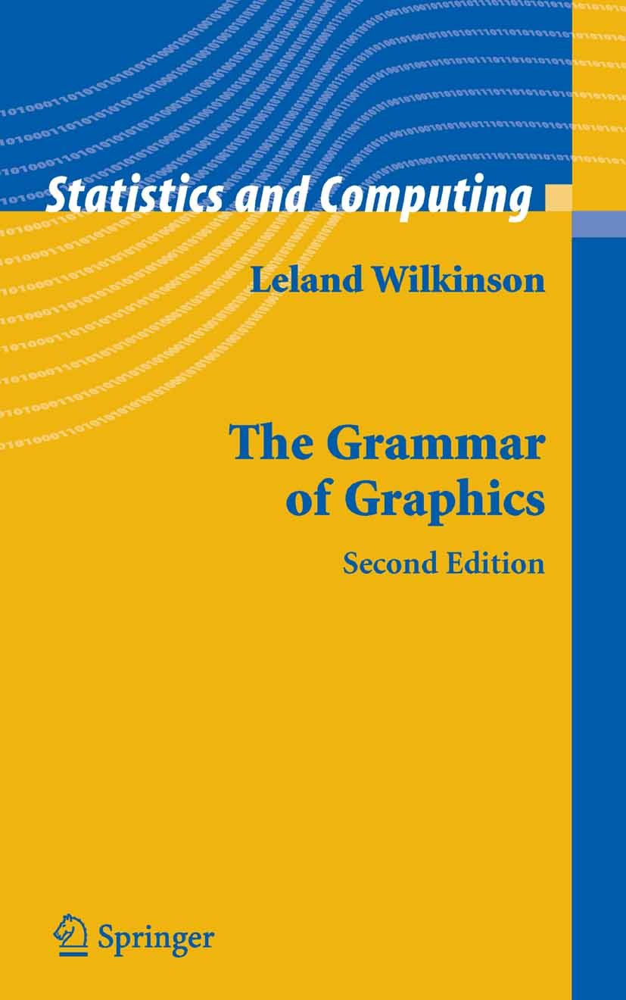
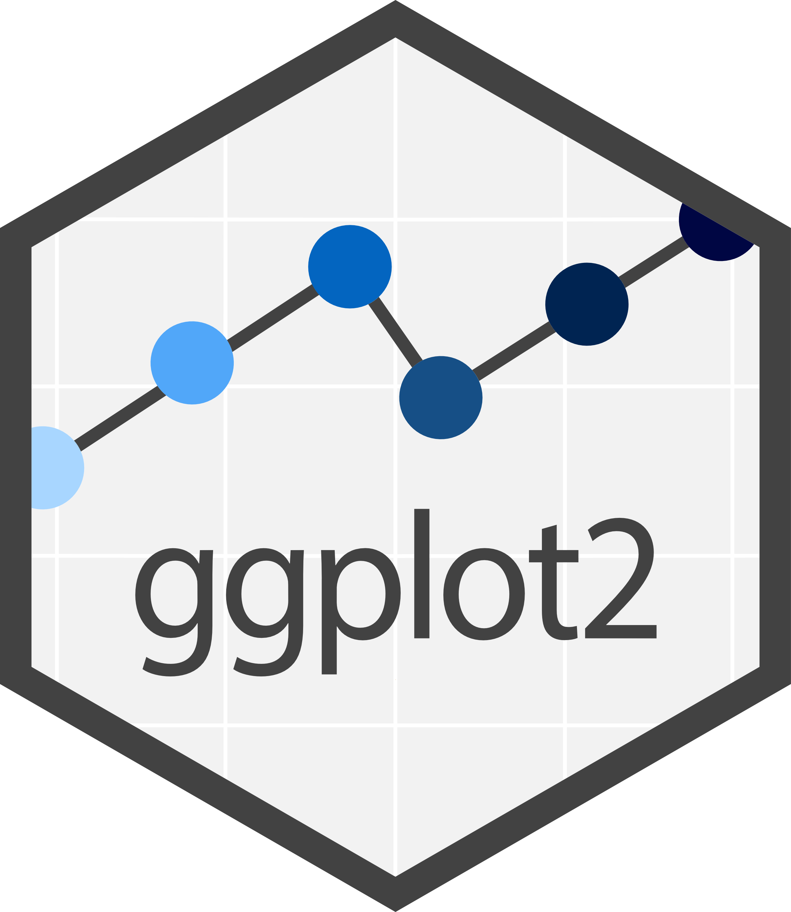
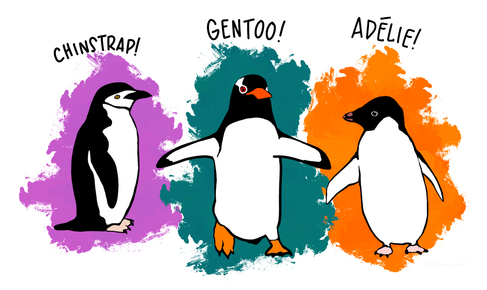
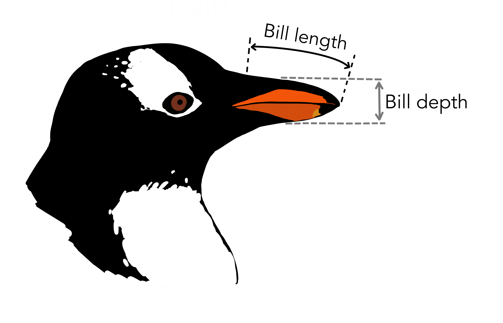
| species | island | bill_length_mm | bill_depth_mm | flipper_length_mm | body_mass_g | sex | year |
|---|---|---|---|---|---|---|---|
| Adelie | Torgersen | 39.1 | 18.7 | 181 | 3750 | male | 2007 |
| Adelie | Torgersen | 39.5 | 17.4 | 186 | 3800 | female | 2007 |
| Adelie | Torgersen | 40.3 | 18.0 | 195 | 3250 | female | 2007 |
| Adelie | Torgersen | 36.7 | 19.3 | 193 | 3450 | female | 2007 |
| Adelie | Torgersen | 39.3 | 20.6 | 190 | 3650 | male | 2007 |
| Adelie | Torgersen | 38.9 | 17.8 | 181 | 3625 | female | 2007 |
| Adelie | Torgersen | 39.2 | 19.6 | 195 | 4675 | male | 2007 |
| Adelie | Torgersen | 41.1 | 17.6 | 182 | 3200 | female | 2007 |
| Adelie | Torgersen | 38.6 | 21.2 | 191 | 3800 | male | 2007 |
| Adelie | Torgersen | 34.6 | 21.1 | 198 | 4400 | male | 2007 |
| Adelie | Torgersen | 36.6 | 17.8 | 185 | 3700 | female | 2007 |
| Adelie | Torgersen | 38.7 | 19.0 | 195 | 3450 | female | 2007 |
| Adelie | Torgersen | 42.5 | 20.7 | 197 | 4500 | male | 2007 |
| Adelie | Torgersen | 34.4 | 18.4 | 184 | 3325 | female | 2007 |
| Adelie | Torgersen | 46.0 | 21.5 | 194 | 4200 | male | 2007 |
| Adelie | Biscoe | 37.8 | 18.3 | 174 | 3400 | female | 2007 |
| Adelie | Biscoe | 37.7 | 18.7 | 180 | 3600 | male | 2007 |
| Adelie | Biscoe | 35.9 | 19.2 | 189 | 3800 | female | 2007 |
| Adelie | Biscoe | 38.2 | 18.1 | 185 | 3950 | male | 2007 |
| Adelie | Biscoe | 38.8 | 17.2 | 180 | 3800 | male | 2007 |
| Adelie | Biscoe | 35.3 | 18.9 | 187 | 3800 | female | 2007 |
| Adelie | Biscoe | 40.6 | 18.6 | 183 | 3550 | male | 2007 |
| Adelie | Biscoe | 40.5 | 17.9 | 187 | 3200 | female | 2007 |
| Adelie | Biscoe | 37.9 | 18.6 | 172 | 3150 | female | 2007 |
| Adelie | Biscoe | 40.5 | 18.9 | 180 | 3950 | male | 2007 |
| Adelie | Dream | 39.5 | 16.7 | 178 | 3250 | female | 2007 |
| Adelie | Dream | 37.2 | 18.1 | 178 | 3900 | male | 2007 |
| Adelie | Dream | 39.5 | 17.8 | 188 | 3300 | female | 2007 |
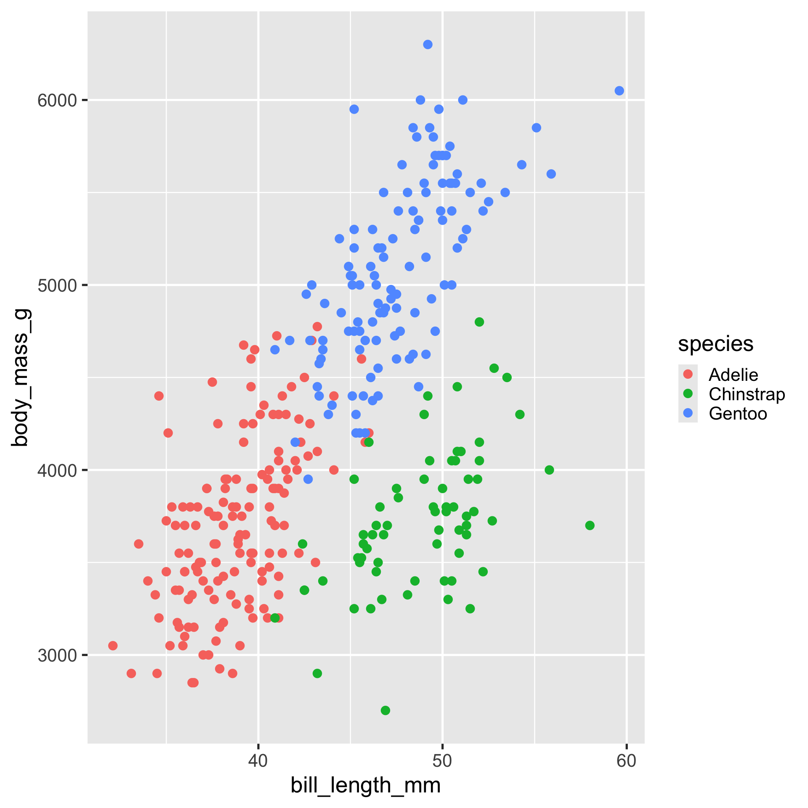
| Données | Esthétique | Géométrie |
|---|---|---|
| Longueur du bec | Position (axe-x) | Point |
| Masse corporelle | Position (axe-y) | Point |
| Espèce | Couleur | Point |

| Data | aes() |
geom |
|---|---|---|
bill_length_mm |
x |
geom_point() |
body_mass_g |
y |
geom_point() |
species |
colour |
geom_point() |

ggplot()ggplot()ggplot()ggplot()ggplot()ggplot()ggplot()ggplot()Changer le style
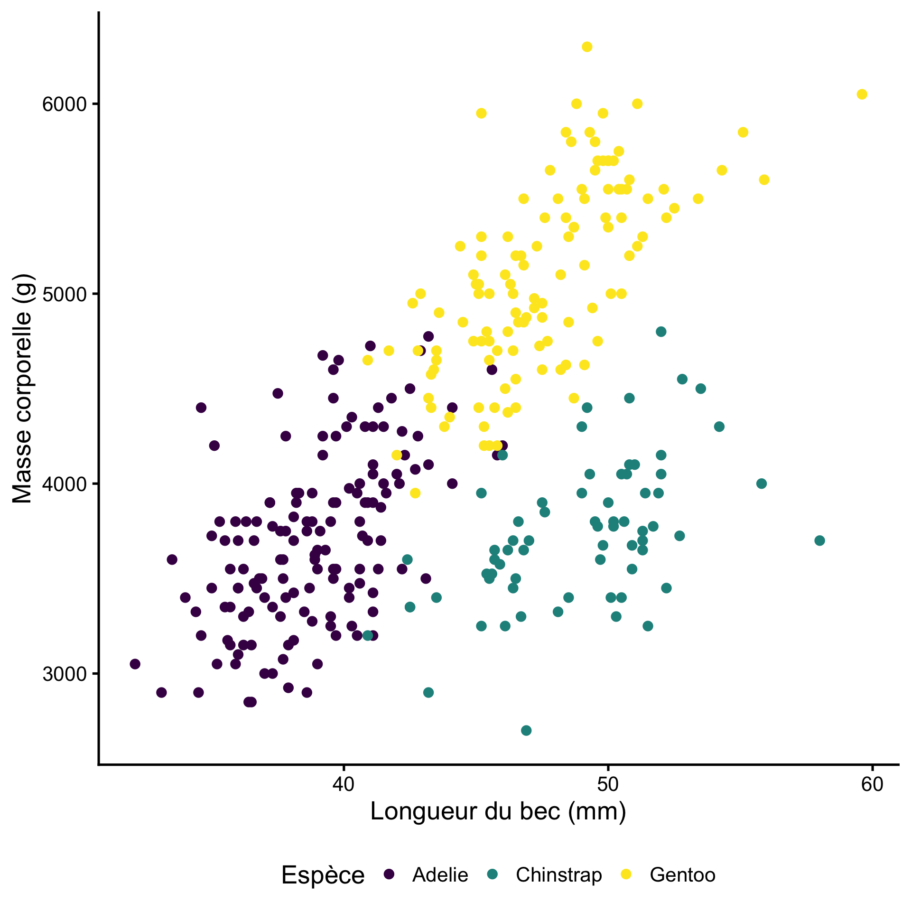
ggplot()| Data | aes() |
geom |
|---|---|---|
bill_length_mm |
x |
geom_point() |
body_mass_g |
y |
geom_point() |
species |
colour |
geom_point() |
species |
shape |
geom_point() |
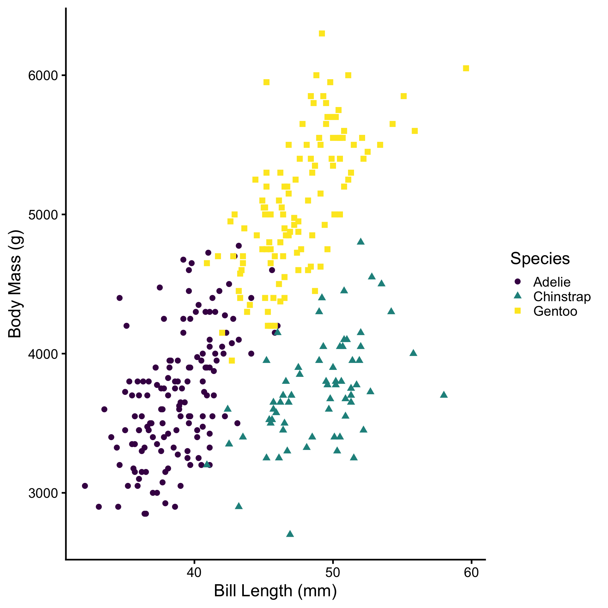
| Data | aes() |
geom |
|---|---|---|
species |
x |
geom_boxplot() |
body_mass_g |
y |
geom_boxplot() |
species |
colour |
geom_boxplot() |
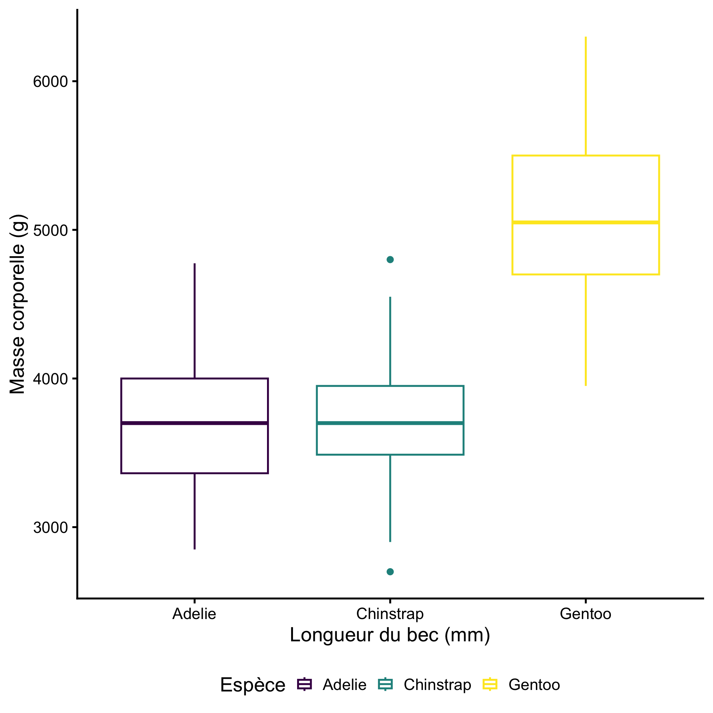
Combiner les graphiques
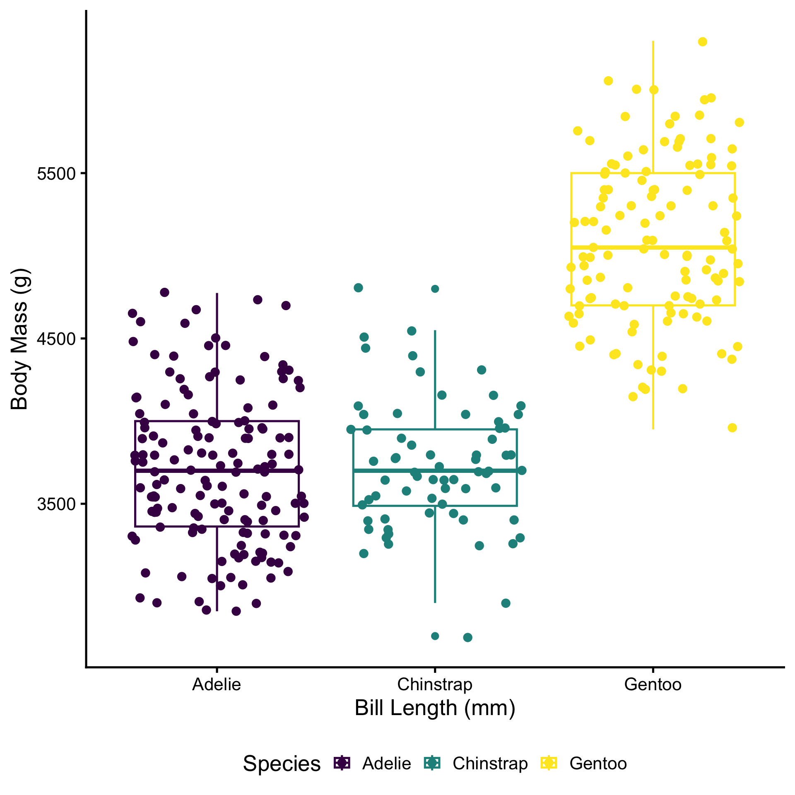
Combiner les graphiques
# fmt: skip
ggplot(data = penguins,
mapping = aes(x = species,
y = body_mass_g,
color = species,
fill = species)) +
geom_jitter() +
geom_violin(alpha = .5) +
scale_color_viridis_d() +
scale_fill_viridis_d() +
labs(x = "Longueur du bec (mm)",
y = "Masse corporelle (g)",
colour = "Espèce",
fill = "Espèce") +
theme_classic() +
theme(legend.position = "bottom")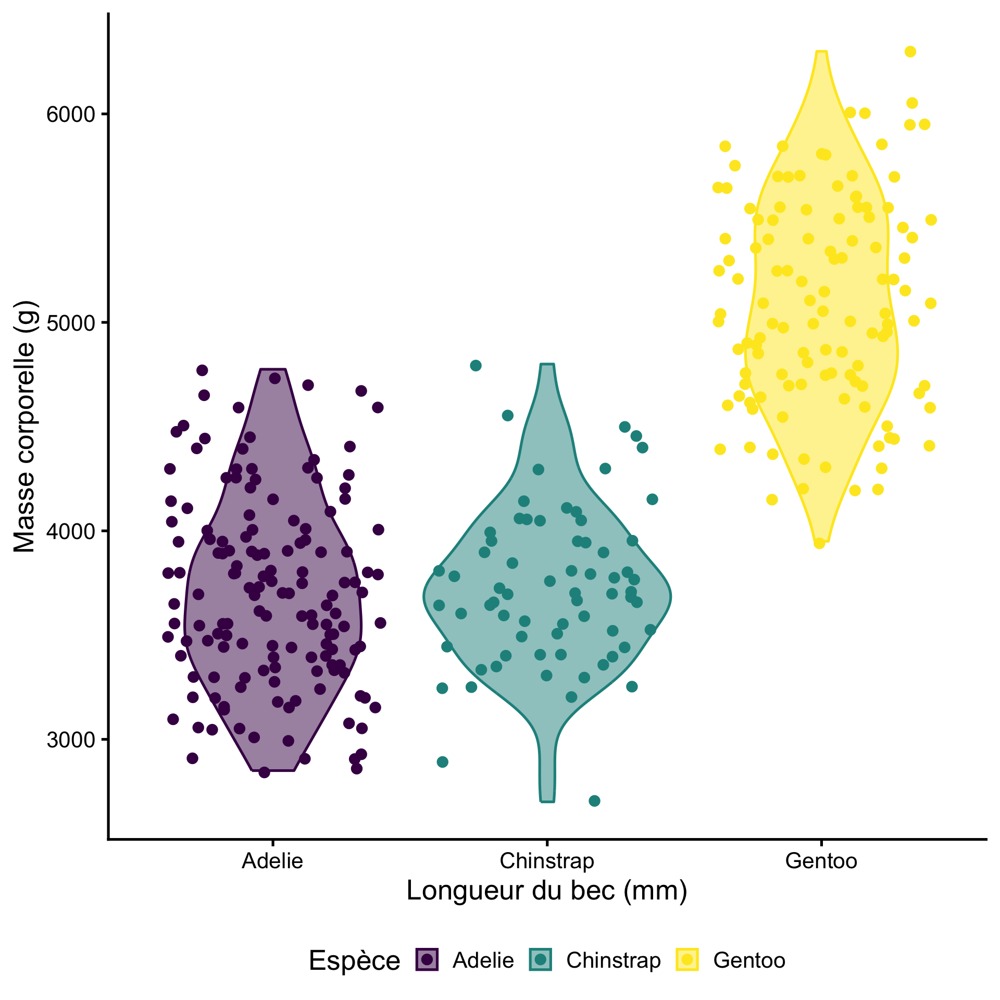
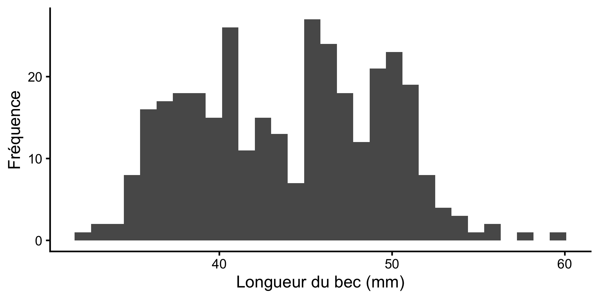
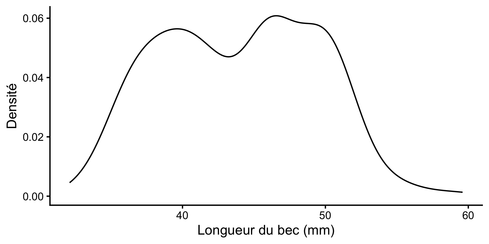
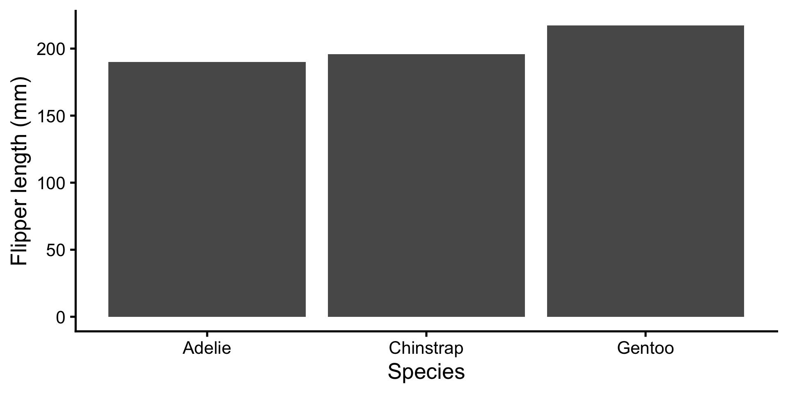
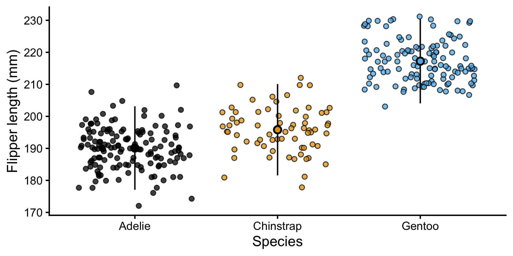
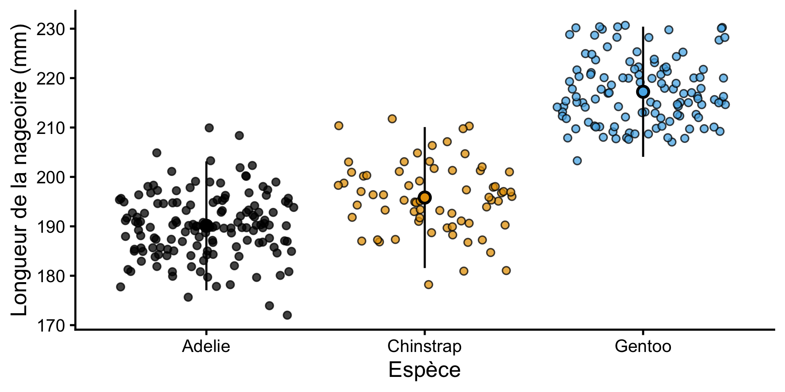
TP 02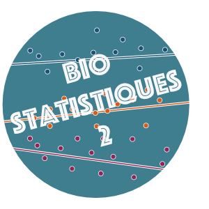